1과목: 소프트웨어 설계
1. 요구사항 검증(Requirements Validation)과 관련한 설명으로 틀린 것은?
2. UML 모델에서 한 사물의 명세가 바뀌면 다른사물에 영향을 주며, 일반적으로 한 클래스가다른 클래스를 오퍼레이션의 매개변수로 사용하는 경우에 나타나는 관계는?
3. 익스트림 프로그래밍 (XP)에 대한 설명으로 틀린 것은?
4. 소프트웨어 설계에서 사용되는 대표적인 추상화(Abstraction) 기법이 아닌 것은?
5. 객체지향 설계에서 정보 은닉(Information Hiding)과 관련한 설명으로 틀린 것은?
6. 소프트웨어 공학에서 모델링 (Modeling)과 관련한 설명으로 틀린 것은?
7. 요구 분석(Requirement Analysis)에 대한 설명으로 틀린 것은?
8. 클래스 다이어그램의 요소로 다음 설명에 해당하는 용어는?
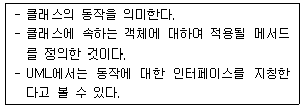
9. 분산 시스템을 위한 마스터-슬레이브(Master-Slave) 아키텍처에 대한 설명으로 틀린 것은?
10. 요구 사항 정의 및 분석·설계의 결과물을 표현하기 위한 모델링 과정에서 사용되는 다이어그램(Diagram)이 아닌 것은?
11. 객체지향의 주요 개념에 대한 설명으로 틀린 것은?
12. 사용자 인터페이스(User Interface)에 대한 설명으로 틀린 것은?
13. GoF(Gang of Four) 디자인 패턴과 관련한 설명으로 틀린 것은?
14. 애자일 개발 방법론과 관련한 설명으로 틀린 것은?
15. 럼바우(Rumbaugh)의 객체지향 분석 기법 중 자료 흐름도(DFD)를 주로 이용하는 것은?
16. 순차 다이어그램(Sequence Diagram)과 관련한 설명으로 틀린 것은?
17. 객체지향 분석 기법과 관련한 설명으로 틀린것은?
18. 대표적으로 DOS 및 Unix 등의 운영체제에서조작을 위해 사용하던 것으로, 정해진 명령문자열을 입력하여 시스템을 조작하는 사용자인터페이스(User Interface)는?
19. 분산 시스템에서의 미들웨어 (Middleware)와 관련한 설명으로 틀린 것은?
20. 소프트웨어 아키텍처와 관련한 설명으로 틀린것은?
2과목: 소프트웨어 개발
21. 테스트를 목적에 따라 분류했을 때,강도(Stress) 테스트에 대한 설명으로 옳은것은?
22. 다음 자료를 버블 정렬을 이용하여오름차순으로 정렬할 경우 PASS 3의 결과는?
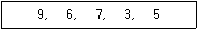
23. 다음 그래프에서 정점 A를 선택하여 깊이우선탐색(DFS)으로 운행한 결과는?
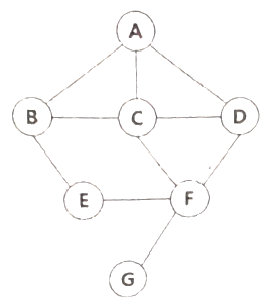
24. 다음 설명에 부합하는 용어로 옳은 것은?
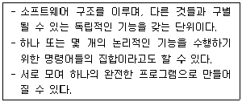
25. 테스트 드라이버(Test Driver)에 대한 설명으로 틀린 것은?
26. 다음 중 선형 구조로만 묶인 것은?
27. 다음은 스택의 자료 삭제 알고리즘이다. ⓐ에 들어 갈 내용으로 옳은 것은? (단, Top: 스택포인터, S: 스택의 이름)
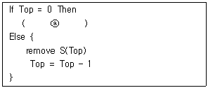
28. 제품 소프트웨어의 사용자 매뉴얼 작성절차로 (가)~(다)와 [보기]의 기호를 바르게 연결한 것은?
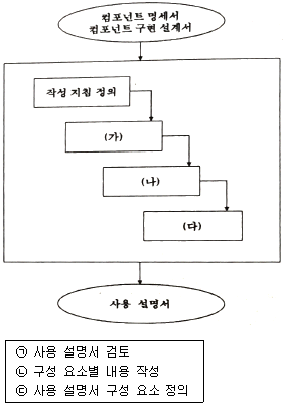
29. 순서가 A, B, C, D로 정해진 입력 자료를 스택에 입력한 후 출력한 결과로 불가능한 것은?
30. 소프트웨어 테스트에서 검증(Verification)과 확인 (Validation)에 대한 설명으로 틀린 것은?
31. 개별 모듈을 시험하는 것으로 모듈이 정확하게 구현되었는지, 예정한 기능이 제대로 수행되는지를 점검하는 것이 주요 목적인 테스트는?
32. 형상 관리의 개념과 절차에 대한 설명으로 틀린 것은?
33. 소스코드 정적 분석(Static Analysis)에 대한 설명으로 틀린 것은?
34. 소프트웨어 개발 활동을 수행함에 있어서 시스템이 고장(Failure)을 일으키게 하며, 오류(Error)가 있는 경우 발생하는 것은?
35. 코드의 간결성을 유지하기 위해 사용되는 지침으로 틀린 것은?
36. 소프트웨어 품질 목표 중 하나 이상의 하드웨어 환경에서 운용되기 위해 쉽게 수정될 수 있는 시스템 능력을 의미하는 것은?
37. 다음 중 최악의 경우 검색 효율이 가장 나쁜트리 구조는?
38. 다음 트리에 대한 중위 순회 운행 결과는?
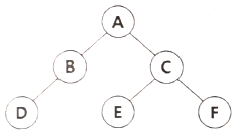
39. 테스트 케이스 자동 생성 도구를 이용하여 테스트 데이터를 찾아내는 방법이 아닌 것은?
40. 저작권 관리 구성 요소 중 패키저(Packager)의 주요 역할로 옳은 것은?
3과목: 데이터베이스 구축
41. 데이터베이스의 무결성 규정(Integrity Rule)과 관련한 설명으로 틀린 것은?
42. 데이터베이스에서 하나의 논리적 기능을 수행하기 위한 작업의 단위 또는 한꺼번에 모두 수행되어야 할 일련의 연산들을 의미하는 것은?
43. 다음 두 릴레이션 Rl과 R2의 카티션 프로덕트(cartesian product) 수행 결과는?
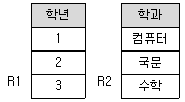
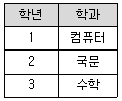
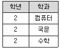
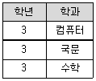
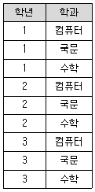
44. 물리적 데이터베이스 설계에 대한 설명으로 거리가 먼 것은?
45. 다음 중 기본키는 NULL 값을 가져서는 안되며, 릴레이션 내에 오직 하나의 값만 존재해야 한다는 조건을 무엇이라 하는가?
46. SQL문에서 HAVING을 사용할 수 있는 절은?
47. 관계 데이터베이스에 있어서 관계 대수 연산이 아닌 것은?
48. 학적 테이블에서 전화번호가 Null값이 아닌 학생명을 모두 검색할 때, SQL 구문으로 옳은 것은?
49. 관계형 데이터베이스에서 다음 설명에 해당하는 키(Key)는?
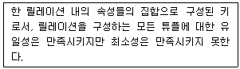
50. 데이터베이스에서 인덱스(Index)와 관련한 설명으로 틀린 것은?
51. 로킹 단위(Locking Granularity)에 대한 설명으로 옳은 것은?
52. 관계 대수에 대한 설명으로 틀린 것은?
53. 데이터의 중복으로 인하여 관계연산을 처리할 때 예기치 못한 곤란한 현상이 발생하는 것을 무엇이라 하는가?
54. 다음 중 SQL에서의 DDL 문이 아닌 것은?
55. 정규화에 대한 설명으로 적절하지 않은 것은?
56. 트랜잭션의 주요 특성 중 하나로 둘 이상의 트랜잭션이 동시에 병행 실행되는 경우 어느 하나의 트랜잭션 실행 중에 다른 트랜잭션의 연산이 끼어들 수 없음을 의미하는 것은?
57. SQL의 논리 연산자가 아닌 것은?
58. 동시성 제어를 위한 직렬화 기법으로 트랜잭션 간의 처리 순서를 미리 정하는 방법은?
59. 이전 단계의 정규형을 만족하면서 후보키를 통하지 않는 조인 종속(JD : Join Dependency) 제거해야 만족하는 정규형은?
60. 어떤 릴레이션 R에서 X와 Y를 각각 R의 애트리뷰트 집합의 부분 집합이라고 할 경우 애트리뷰트 X의 값 각각에 대해 시간에 관계없이 항상 애트리뷰트 Y의 값이 오직 하나만 연관되어 있을 때 Y는 X에 함수 종속이라고 한다. 이 함수 종속의 표기로 옳은 것은?
4과목: 프로그래밍 언어 활용
61. 모듈 내 구성 요소들이 서로 다른 기능을 같은 시간대에 함께 실행하는 경우의 응집도(Cohesion)는?
62. 오류 제어에 사용되는 자동반복 요청방식(ARQ)이 아닌 것은?
63. 다음 파이썬(Python) 프로그램이 실행되었을 때의 결과는?
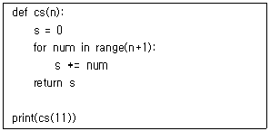
64. 다음 C언어 프로그램이 실행되었을 때의 결과는?
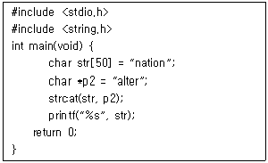
65. JAVA에서 힙(Heap)에 남아있으나 변수가 가지고 있던 참조값을 잃거나 변수 자체가 없어짐으로써 더 이상 사용되지 않는 객체를 제거해주는 역할을 하는 모듈은?
66. 다음 C언어 프로그램이 실행되었을 때의 결과는?
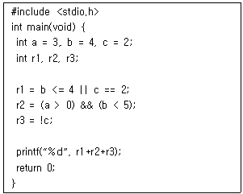
67. 다음 중 JAVA에서 우선순위가 가장 낮은 연산자는?
68. 사용자가 요청한 디스크 입·출력 내용이 다음과 같은 순서로 큐에 들어 있을 때 SSTF 스케쥴링을 사용한 경우의 처리 순서는? (단, 현재 헤드 위치는 53 이고, 제일 안쪽이 1번, 바깥쪽이 200번 트랙이다.)
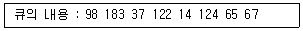
69. 192.168.1.0/24 네트워크를 FLSM 방식을 이용하여 4개의 Subnet으로 나누고 IP Subnet-zero를 적용했다. 이 때 Subnetting 된 네트워크 중 4번째 네트워크의 4번째 사용가능한 IP는 무엇인가?
70. C Class에 속하는 IP address는?
71. 다음 C언어 프로그램이 실행되었을 때의 결과는?
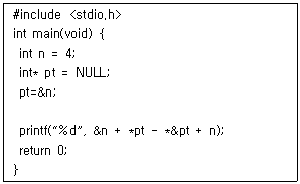
72. 귀도 반 로섬(Guido van Rossum)이 발표한 언어로 인터프리터 방식이자 객체지향적이며, 배우기 쉽고 이식성이 좋은 것이 특징인 스크립트 언어는?
73. 다음 JAVA 프로그램이 실행되었을 때의 결과를 쓰시오.
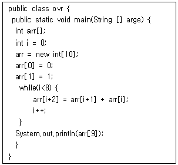
74. 프로세스와 관련한 설명으로 틀린 것은?
75. 모듈의 독립성을 높이기 위한 결합도(Coupling)와 관련한 설명으로 틀린 것은?
76. TCP헤더와 관련한 설명으로 틀린 것은?
77. 모듈화(Modularity)와 관련한 설명으로 틀린 것은?
78. 다음 중 페이지 교체(Page Replacement)알고리즘이 아닌 것은?
79. C언어에서의 변수 선언으로 틀린 것은?
80. 파일 디스크립터(File Descriptor)에 대한 설명으로 틀린 것은?
5과목: 정보시스템 구축관리
81. 침입탐지 시스템(IDS : Intrusion Detection System)과 관련한 설명으로 틀린 것은?
82. 정보 시스템 내에서 어떤 주체가 특정 개체에 접근하려 할 때 양쪽의 보안 레이블(Security Label)에 기초하여 높은 보안 수준을 요구하는 정보(객체)가 낮은 보안 수준의 주체에게 노출되지 않도록 하는 접근 제어 방법은?
83. 구글의 구글 브레인 팀이 제작하여 공개한 기계 학습(Machine Leaming)을 위한 오픈소스 소프트웨어 라이브러리는?
84. 국내 IT 서비스 경쟁력 강화를 목표로 개발되었으며 인프라 제어 및 관리 환경, 실행 환경, 개발 환경, 서비스 환경, 운영환경으로 구성되어 있는 개방형 클라우드 컴퓨팅 플랫폼은?
85. 정보 보안을 위한 접근 제어(Access Control)과 관련한 설명으로 틀린 것은?
86. 소프트웨어 개발 프레임워크와 관련한 설명으로 틀린 것은?
87. 물리적 배치와 상관없이 논리적으로 LAN을구성하여 Broadcast Domain을 구분할 수있게 해주는 기술로 접속된 장비들의 성능향상 및 보안성 증대 효과가 있는 것은?
88. SQL Injection 공격과 관련한 설명으로 틀린것은?
89. 비대칭 암호화 방식으로 소수를 활용한암호화 알고리즘은?
90. 다음에서 설명하는 IT 스토리지 기술은?
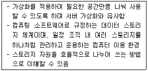
91. Cocomo model 중 기관 내부에서 개발된 중소규모의 소프트웨어로 일괄 자료 처리나 과학기술계산용, 비즈니스 자료 처리용으로 5만 라인이하의 소프트웨어를 개발하는 유형은?
92. 다음 내용이 설명하는 것은?
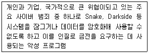
93. 생명주기 모형 중 가장 오래된 모형으로 많은적용 사례가 있지만 요구사항의 변경이어렵고 각 단계의 결과가 확인 되어야 다음단계로 넘어갈 수 있는 선형 순차적, 고전적생명 주기 모형이라고도 하는 것은?
94. 소프트웨어 생명주기 모형 중 Spiral Model에 대한 설명으로 틀린 것은?
95. 특정 사이트에 매우 많은 ICMP Echo를 보내면, 이에 대한 응답(Respond)을 하기 위해 시스템 자원을 모두 사용해버려 시스템이 정상적으로 동작하지 못하도록 하는 공격방법은?
96. TCP/IP 기반 네트워크에서 동작하는 발행-구독 기반의 메시징 프로토콜로 최근 IoT 환경에서 자주 사용되고 있는 프로토콜은?
97. 시스템이 몇 대가 되어도 하나의 시스템에서 인증에 성공하면 다른 시스템에 대한 접근권한도 얻는 시스템을 의미하는 것은?
98. 시스템에 저장되는 패스워드들은 Hash 또는 암호화 알고리즘의 결과 값으로 저장된다. 이때 암호공격을 막기 위해 똑같은 패스워드들이 다른 암호 값으로 저장되도록 추가되는 값을 의미하는 것은?
99. S/W 각 기능의 원시 코드 라인수의 비관치, 낙관치, 기대치를 측정하여 예측치를 구하고 이를 이용하여 비용을 산정하는 기법은?
100. 오픈소스 웹 애플리케이션 보안 프로젝트로서 주로 웹을 통한 정보 유출, 악성 파일 및 스크립트, 보안 취약점 등을 연구하는 곳은?